Ag reality i na predaj samostatné rod.domy 4 izb- Miloslavov
Miloslavov
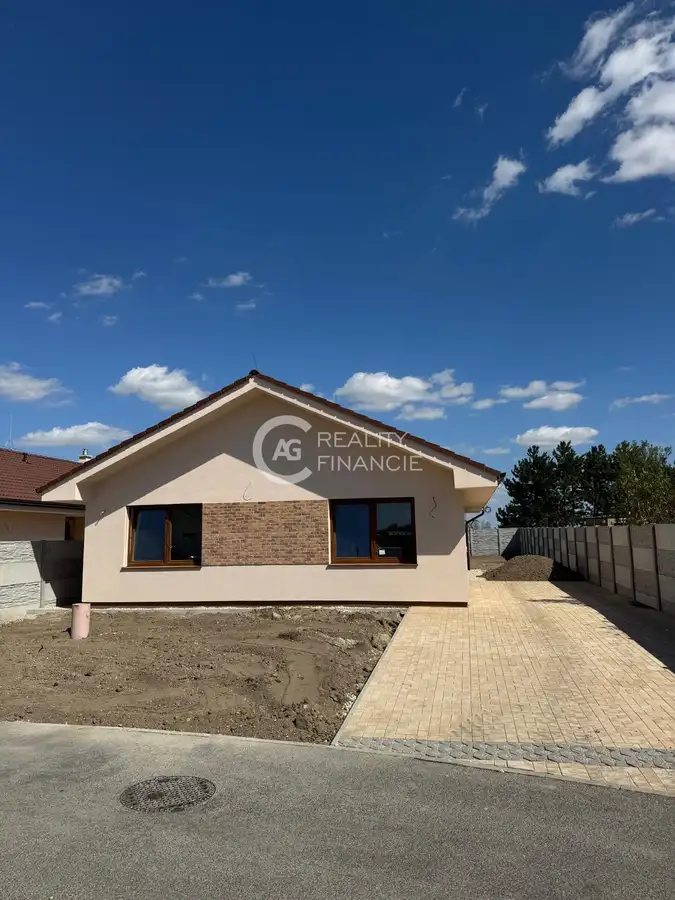
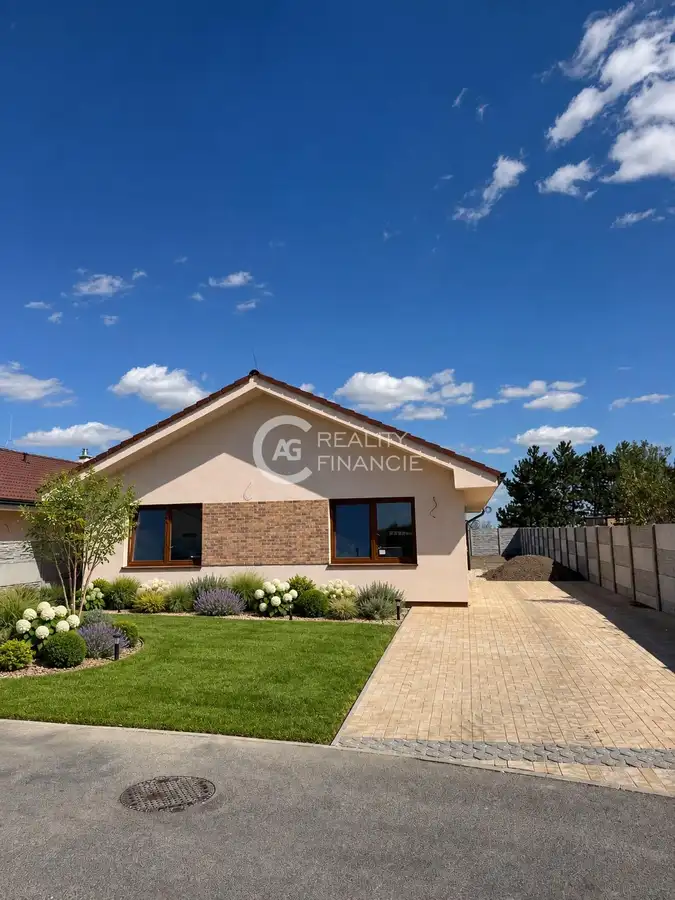
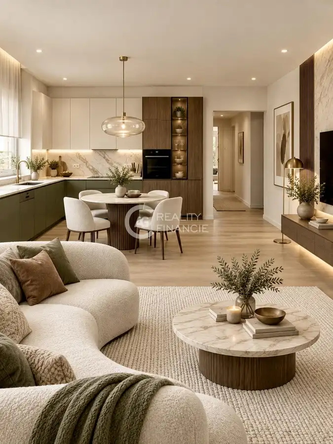
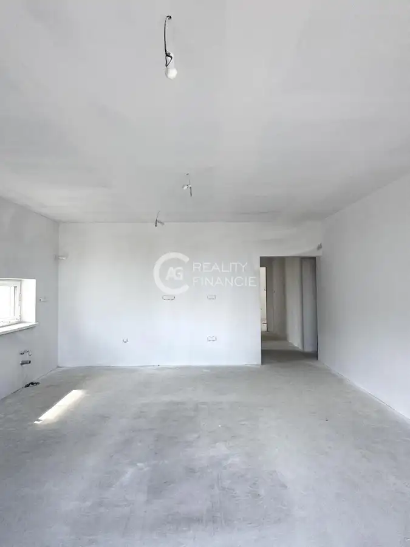
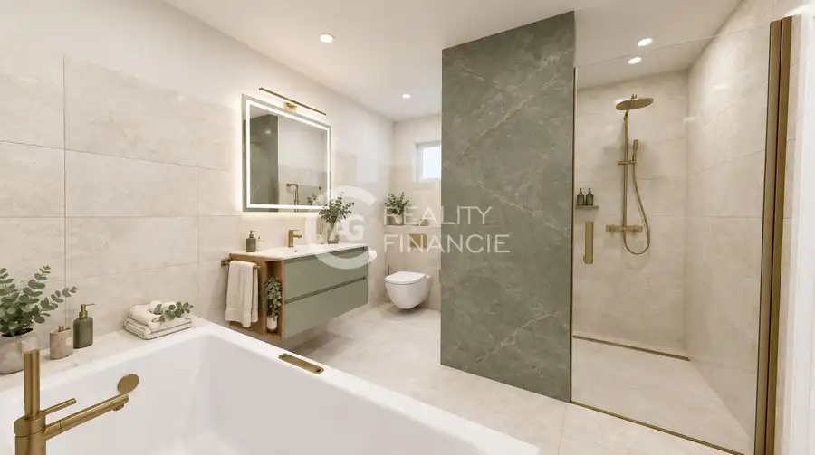
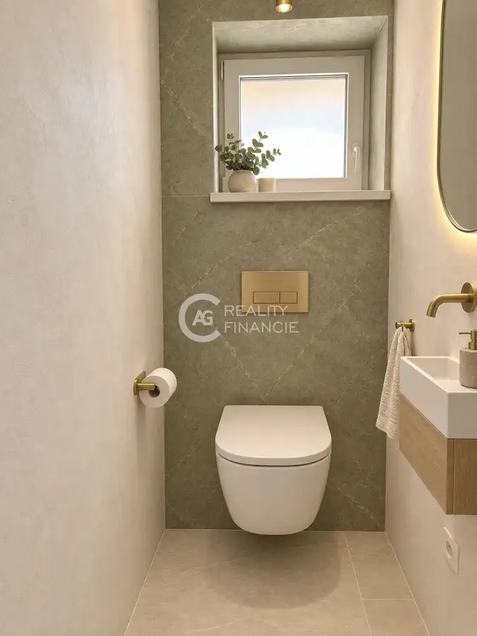
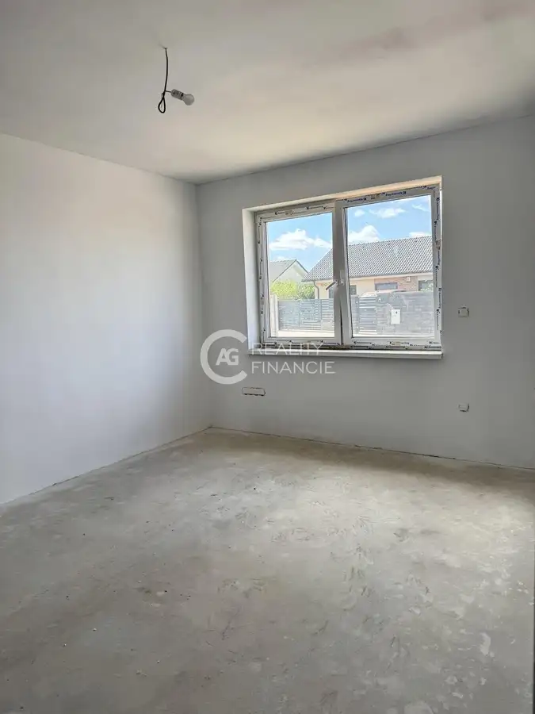
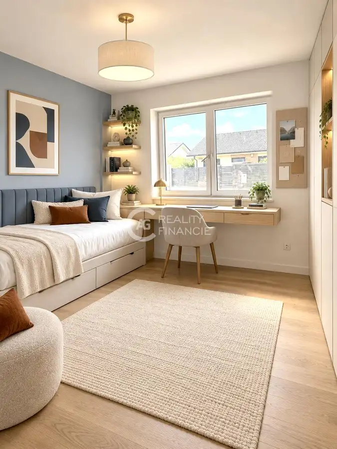
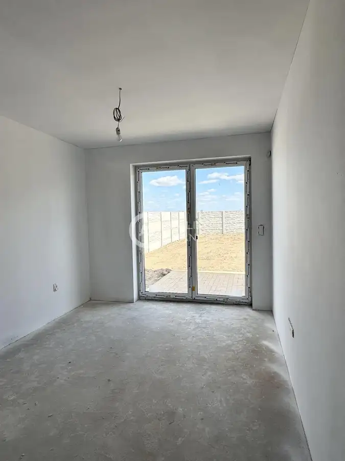
- Plocha135 m²
- StavNovostavba
- VlastníctvoOsobné
- Energetická triedaA
O nehnuteľnosti
Realitná kancelária AG Reality Vám predstavuje na predaj skolaudované novostavby- kvalitné samostatné 4- izbové rodinné domy v obci Miloslavov- Alžbetin dvor na Sekvojovej ulici s možnosťou dokončenia do štandardu. Táto lokalita Vám ponúka kompletnú občiansku vybavenosť a má veľmi dobré napojenie na diaľnicu D4 a R7 vďaka ktorej máte rýchly prístup do Bratislavy. NA PREDAJ: Samostatné 4-izbové rodinné domy s kúpeľňou so sprchovacím kútom a vaňou, samostatným WC, A- energetický certifikát, s tepelným čerpadlom (vzduch-voda) a priestranným rovinatým pozemkomVÝMERA: Úžitková plocha: 109, 8m2, Zastavaná plocha: 135 m2 POZEMOK:Plocha pozemku je od 509 m2 do 594 m2, betónové oplotenie z troch strán. DISPOZIČNÉ RIEŠENIE:Dispozične sa jedná o samostatný 4-izbový rodinný dom s príslušenstvom. Obytnými miestnosťami sú: obývacia izba spojená s kuchyňou a tri izby. Príslušenstvom bytu je: kryté vstupné závetrie, vstupná chodba, WC, komora, kúpeľňa. Vstupnú časť tvorí chodba so samostatným WC. V závere chodby sa po ľavej strane nachádzajú dve izby a po pravej strane sa nachádza obývačka spojená s kuchynským kútom, spálňa s vlastným šatníkom, komora a kúpeľňa. ROZLOŽENIE DOMU :kryté vstupné závetrie: 15,68 m2zádverie: 4,45 m2 chodba:6,28 m2WC: 2,37 m2izba: 17,21 m2izba: 16,31 m2kúpeľňa: 9 m2spálňa: 12,6 m2šatník spálne: 7,34 m2komora: 2 m2obývacia izba s kuchynským kútom: 32,25 m2 terasa:10 m2Spolu:135m2HOLODOM OBSAHUJE:Podlahové kúrenie teplovodné, zdroj tepla na vykurovanie a príprava teplej vody je tepelným čerpadlom (vzduch-voda), predprípravu na alarm, video vrátnika, klimatizáciu, krb a exteriérové žalúzie. Okná sú plastové, 3-sklo. Nachádzajú sa tu inžinierske siete: elektrina, voda, kanalizácia, optika. Plyn sa tu nenachádza. PARKOVANIE: Samostatné parkovacie státie priamo pred domom zo zámkovej dlažby LOKALITA: Obec Miloslavov je od Bratislavy vzdialená 15 km. (Podunajské Biskupice 6 km, Šamorín 15 km) Rýchla dostupnosť je zabezpečená vlakom ako aj autobusom a má veľmi dobré napojenie na diaľnicu D4 a R7 vďaka ktorej máte rýchly prístup do Bratislavy. V obci je veľmi dobrá občianska vybavenosť – kultúrny dom, škôlka, pošta, OC Miloslavov a len pár km je základná škola, dve škôlky, 2x potraviny, kaderníctvo, kozmetika, lekár pre dospelých, detské plavecké jasličky, ihrisko, kostol, úrad, lekáreň, zmrzlina, Biedronka. V blízkosti sa nachádzajú jazerá Nové Košariská s možnosťou kúpania a rybolovu.V OC Miloslavov najdete obchody ako: Billa, 101 Drogéria, pekáreň, barbershop, policajná stanica, manikúra a pedikúra. CENA:Cena nehnuteľnosti je od 349.900 EUR do 376.100 EUR v závislosti od veľkosti pozemku ( vyhotovenie do štandardu ktorý zahŕňa interiérové dvere, obklady, dlažbu, sanitu v kúpeľni, laminátové parkety a obvodové lišty + 12 000 EUR ) vrátane provízie a kompletného právneho servisu. V prípade záujmu nás neváhajte kontaktovať. RD s veľkosťou pozemku 509 m2, cena holodom 349 900 EUR, cena štandard + 12 000 EURRD s veľkosťou pozemku 522 m2, cena holodom 353 600 EUR, cena štandard + 12 000 EURRD s veľkosťou pozemku 523 m2, cena holodom 353 600 EUR, cena štandard + 12 000 EURRD s veľkosťou pozemku 594 m2, cena holodom 376 100 EUR, cena štandard + 12 000 EUR KONTAKT: Mgr. Veronika Gašpariková, tel. č.: 0901 727 778, email: veronika.gasparikova@agreality.sk Fotografie a text sú autorským dielom a majetkom spoločnosti AG reality&finance, s.r.o.Fotografie sú VIZUALIZÁCIOU RD
Parametre
- Druh
- Rodinný dom
- Dátum zverejnenia
- 08. 09. 2026
- Dĺžka pozemku
- 36
- Energetická náročnosť
- Nízkoenergetický
- Energetický certifikát budovy
- A
- Orientácia
- Juhozápadná
- Plocha pozemku
- 509 m²
- Plocha terasy v m2
- 10 m²
- Počet izieb / miestností
- 4
- Počet nadzemných podlaží
- 1
- Rok kolaudácie
- 2026
- Rok výstavby
- 2025
- Stav nehnuteľnosti
- Novostavba
- Telekomunikácie
- Optická sieť
- Terás
- 1
- Terén pozemku
- Rovinatý
- Typ
- Predaj
- Typ konštrukcie
- Tehlová
- Vlastníctvo
- Osobné
- Vybavenie
- Terasa, Špajza
- Vykurovanie
- Podlahové
- Zariadenie
- Holopriestor
- Zastavaná plocha
- 135 m²
- Úžitková plocha
- 135 m²
- Šírka pozemku
- 15
Kde to je


Mohlo by Vás zaujímať
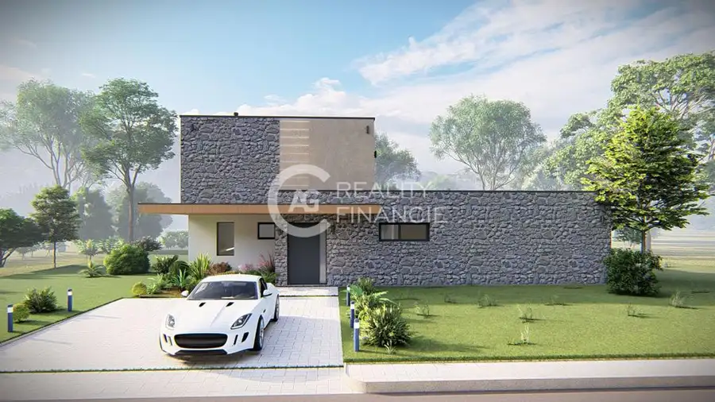
PozemokNové 139 000 €AG Reality I na predaj tri slnečné stavebné pozemky - Zálesie Zálesie 605 m²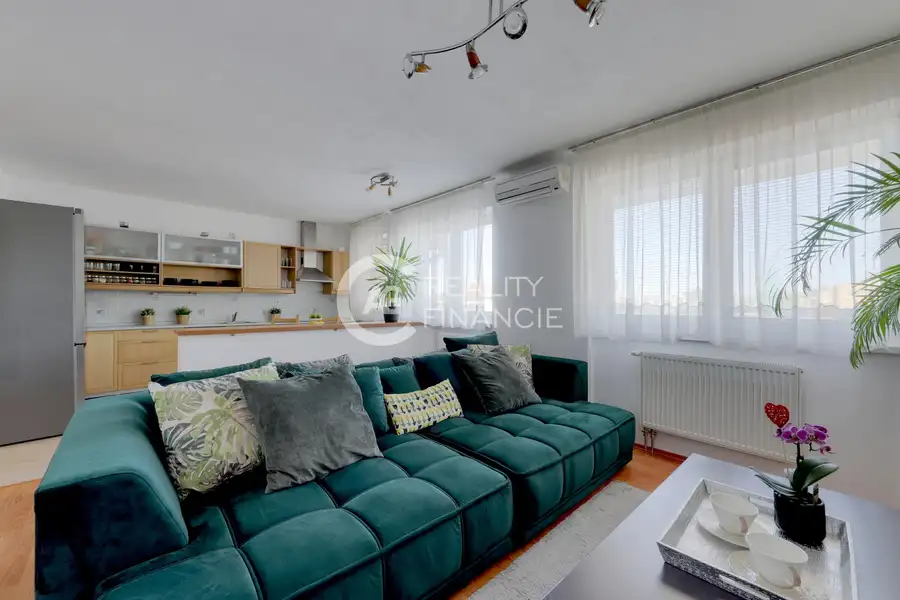
BytNové 226 000 €Ag Reality i na predaj útulný 3 izb.byt v Dunajskej Lužnej - vodárenská ul. Dunajská Lužná 3-izbový71 m²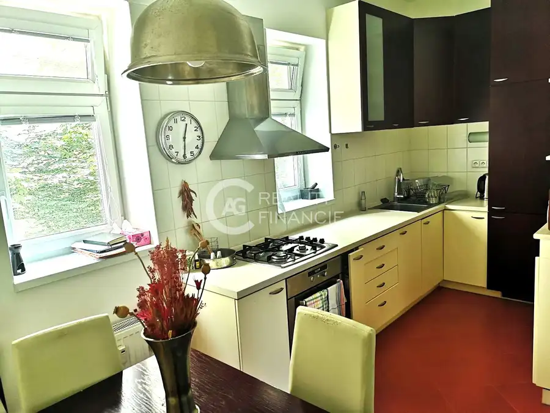
BytNové Cena na vyžádáníAg reality i na prenájom kompletne zariadený 2I. byt na Palisádoch v Bratislave Staré Mesto, Bratislava 2-izbový62 m²1. podlažie